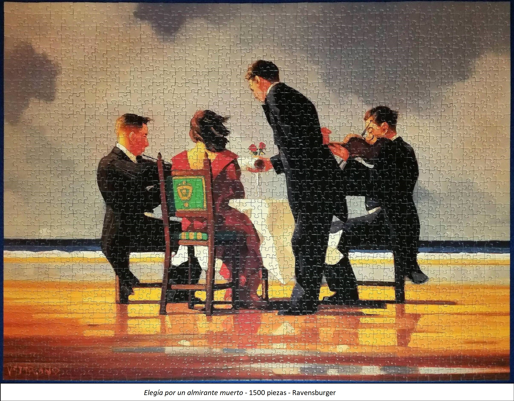
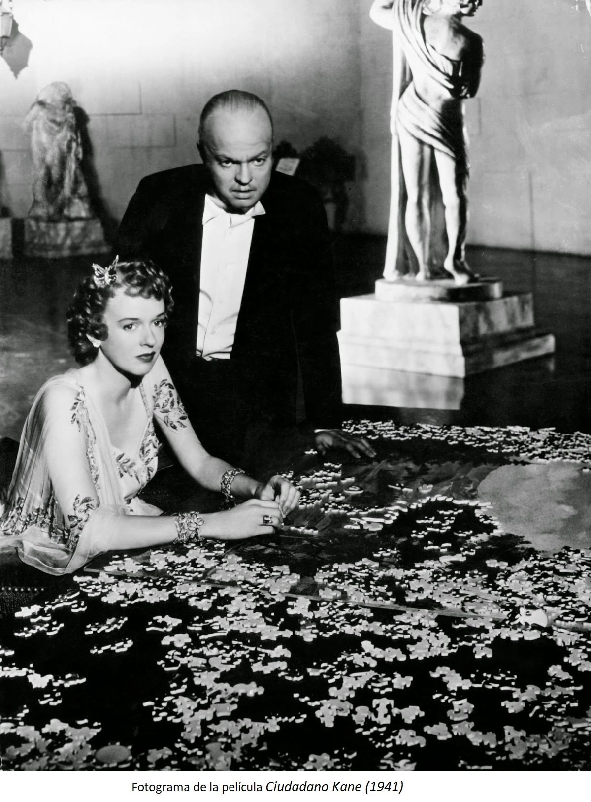

El puzzle y el territorio
Desde que tenemos uso de razón, buscamos la manera de encajar objetos entre sí. Los puzzles o rompecabezas representan la sistematización de ese impulso. Son además el origen de varias metáforas cotidianas: la pieza que nos falta, los dos fragmentos que al juntarse forman una figura perfecta... ¿Será que pensar en la existencia como un conjunto de piezas que se arman y desarman nos resulta, de alguna forma, tranquilizador?

El primer recuerdo de algo parecido a un puzzle es ese juego que consistía en introducir un círculo, un triángulo o un cuadrado en el interior de un espacio hueco, tallado con las medidas exactas de la pieza. Así es como aprendimos las formas. El círculo dentro del círculo, el cuadrado en el cuadrado, el triángulo también en su sitio. A causa de este y otros juegos similares, crecimos con la satisfactoria mentirijilla del ensamblaje perfecto.
Los primeros puzzles pictóricos –en inglés existe una palabra para denominarlos, jigsaw puzzles, pero en español es necesario hacer la distinción– nacieron, precisamente, como materiales pedagógicos. El hallazgo se lo debemos a John Spilsbury, un constructor de mapas británico a quien en alguna fecha próxima a 1760 se le ocurrió dividir una imagen del continente europeo en pequeños fragmentos, con el objetivo de facilitar a sus alumnos el estudio de la geografía. Así es como lo cuenta la autora Anne D. Williams en su libro The Jigsaw Puzzle: Piecing Together a History (Berkley Books, 2004). Esta experta en historia del juguete desgrana a lo largo de 300 páginas toda la evolución de este pasatiempo, su estrecha vinculación con la clase social más acomodada y su popularización en tiempos de crisis.
Ricos en crisis. Hay muchos ejemplos. Así nos lo mostraba, por ejemplo, la película ‘Ciudadano Kane’, donde la protagonista Susan Alexander Kane sueña, desde el lujoso palacio en el que su marido -el multimillonario Charles Foster Kane- la mantiene encerrada, con la ajetreada vida en Nueva York. Imagina las idas y venidas de la gente en los teatros, los rostros felices en una ciudad que no duerme; y mientras, arma ese gran rompecabezas que nunca llega a terminar. El puzle, en este caso, es la metáfora del aburrimiento ocioso de la clase más alta. En lo que respecta a la vinculación de los constructores de puzzles con tiempos de crisis, más adelante hablaremos de ello.
Según la Real Academia Española, en español la palabra “puzle” es un sinónimo de la primera acepción de la palabra “rompecabezas”, es decir: “Juego que consiste en componer determinada figura combinando cierto número de pedazos de madera o cartón, en cada uno de los cuales hay una parte de la figura”. Aunque la palabra ‘rompecabezas’ también puede referirse a un “problema o acertijo”, o a un arma, no será ese el caso de este texto.
Con todo detalle
¿Has escuchado la historia del esquimal que, en el polo norte, aprende a diferenciar 30, 40 o 50 tipos de color blanco? Lo mismo sucede con el puzzle: después de un tiempo, puede una percibir las diferentes texturas y patrones de las piezas con una facilidad en un primer momento inconcebible. De repente, dos piezas idénticamente azules se convierten en dos elementos claramente diferenciados; mientras que una es del azul del cielo, la otra se vuelve del color del agua o del espejo que sostiene una persona.
Es lo mismo que me sucedía cuando, siendo muy pequeña, pasaba horas observando las figuras que formaban las irregularidades en la pared de gotelé de mi casa. Lo que en un primer momento parecía una simple pared blanca acababa tomando la forma de animal, castillo o, más habitual, rostros deformes con narices enormes. Si alguien cortase con un pequeño bisturí todos esos pedazos de pared y después los mezclase sobre una superficie plana, creo que todavía hoy sería capaz de recomponer la imagen de aquellos rostros, simples cachos de yeso indiferenciados si no hubiese sido por la atenta mirada tantos años sobre ellos.
Alejandro Clemente León sabe de detalles y sabe de rapidez.
Técnica para competir: siempre utilizo la misma técnica: doy la vuelta a todas las piezas y separo las piezas del marco. Hay gente que primero necesita hacer el marco, hay otros que lo dejan para el final. En mi caso, hago el puzzle por zonas. Yo no clasifico, lo que hago es que intento hacer el puzzle por zonas. Tengo todas las piezas dadas la vuelta, si por ejem plo el puzzle tiene una zona de cielo cojo todas las piezas de cielo, si coincide que hay piezas de marco también las monto, y luego me voy a otra zona con otro color. Si en algun momento veo que no estoy yenfdo fino, ahí si que cojo todas las piezas del marco y lo hago, como una forma de desbloquear.
¿Qué es lo que te gusta o te engancha de los puzzles?
A nivel de casa, es la paciencia. Tienes que saber disfrutar de hacer un puzzle en el sentido de no agobiarse sino que te sirva como una forma de desconexión. A nivel de competición, lo que engamncha es el tema de que a diferencia de otras aficiones en las que compites contra otras personas, compites contra ti mismo, se trata de batir tus propios tiempos. Eso engancha.
Desde que soy pequeño no he parado toda mi vida de hacer puzzles. Fue mi padre el que me metió en este tema.
el primer concurso fue en mayo de 219 en “villadepans ??) nos juntamos en un parque 30 o 40 parejas. Lo vi de casualidad en internet, porque me lo pasó una amiga. Cuando fui y vi que había tanta gente y lo profesional que era.. con el tiempo bien medido y ttodo. Pensé “esto es algo serio” . lleva desde hace años.. Me animó a que me apuintase al campeonato nacional de Esoaña.
He ganado el de espaá y el de 2022 y 2023 el internacional. Y el de España, igual: 2019, justo antes de la pandemia.quedé undécimo en individual y en parejas . Ahí me lo creí. Vi que igual sí que tenía una habilidad. Luego, en la pandemia, la exploté. los siguientes concursos fueron en 2022 y ahí si que gané el de españa y el del mundo.
Puzzle favorito: el guernica de picasoo de 3.000 piezas. Lo hizo con 12 años.
La pandemia fue un momento clave para entrenar. Yo no tenía tantos puzles de 500 piexzas que son los que se usan en competición. Tenía 10 o 20, cada día hacia uno y terminaba repitiendo. Ahora tengo más de 100 puzles solo de 500 piezas.
Mi madre también se ha enganchado a los puzzles y ahora compite.

Epílogo: Entrevista con un constructor de puzzles
Esto fue lo que Marzus (Max) nos contó sobre su gran pasión:
¿De dónde viene su afición?
Es algo que siempre me ha atraído. Incluso de niño, aunque lo practiqué poco durante mi infancia y adolescencia. En general, me gusta la idea de ser capaz de dar forma a algo que está descompuesto, es decir, de resaltar la belleza de algo que aparentemente carece de sentido.
Mis primeros recuerdos se remontan sin duda a mi infancia: en algunos sobres sorpresa o adjuntos a algunos tebeos o artilugios de superhéroes americanos había pequeños rompecabezas de 36, 50 o 60 piezas (ahora no recuerdo bien), que me divertía montando y desmontando, para medir mi velocidad de composición. Tuve varios de ellos. Sin embargo, desconocía los rompecabezas más grandes. Un día, por mi cumpleaños (más o menos hacia los 9 o 10 años) me regalaron un puzle de 1.000 piezas. Me pareció algo monstruoso e inconcebible para mis modestísimos conocimientos sobre el tema. El motivo del puzle, muy difícil para mí, representaba la vegetación otoñal de un bosque.
La pasión, dormida durante años, volvió por casualidad muchos años después (yo tenía unos 25). Un día, una amiga tenía un rompecabezas de 2.000 piezas que representaba una hermosa batalla naval. Me fascinó y lo compré casi de inmediato. Lo monté con gran pasión y, a medida que lo construía, me venían a la memoria los mecanismos y métodos de construcción que utilizaba para los pequeños rompecabezas de mi infancia. Es el primer puzle de mi Galería.
A este puzle le siguió el de la Torre de Babel de 9.000 piezas de Ravensburger, en aquel momento una de las piezas más grandes producidas. Fue un verdadero reto para mí, a pesar de que el rompecabezas se armó manteniendo las dos bolsas separadas, algo que nunca haría hoy en día. Pero esa es otra historia.
¿Tiene un método específico?
Nueve de cada diez veces comienzo la construcción de la manera clásica, es decir, uniendo el borde del puzle. Por lo demás, depende mucho del tipo de imagen, de sus colores, de su definición, de la presencia o ausencia de algunos o muchos detalles o particularidades. Para un rompecabezas muy colorido, procedo claramente a una clasificación minuciosa de los colores; para un rompecabezas con muchos detalles o particularidades intento seleccionar las piezas que representan estos detalles. Si la imagen es muy borrosa, la clasificación se reduce al mínimo necesario.
Dado que clasificar las piezas, como es bien sabido, es un procedimiento mortalmente aburrido (aunque importante), a veces me divierto mucho más evitándolo por completo y limitándome a sacar las piezas de la caja y colocándolas directamente sobre la superficie de trabajo.
Un caso aparte lo representan los mapas: en este caso se trata primero de completar los círculos de los hemisferios, operación a la que sigue inmediatamente la definición de las partes externas (casi siempre representadas por decoraciones y caracteres), para concluir con las partes internas de los globos, que constituyen el mapa propiamente dicho.
¿Por qué los rompecabezas de mapas?
Realmente no puedo explicarlo. Sí recuerdo, sin embargo, que en secundaria me gustaba especialmente copiar (no calcar) mapas de los distintos estados europeos con el mayor detalle posible. Me encantan los mapas porque encierran no solamente sabiduría, sino también, a menudo, un gran gusto decorativo. Me parecen tan bellos como instructivos, para quienes estén dispuestos y dispongan del tiempo necesario para comprenderlos. Probablemente por ello, muy a menudo, al final de la construcción del rompecabezas me deleito informándome de datos históricos sobre el mapa y el cartógrafo que lo elaboró.
¿Dónde encuentra los puzles más antiguos? ¿Se considera coleccionista?
Sí, me considero coleccionista, aunque en comparación con hace unos años, mi actividad de búsqueda (y composición) de puzles ha disminuido enormemente, tanto por falta de tiempo como porque las pasiones van y vienen. A veces están vivas como una llama, a veces duermen un tiempo bajo las cenizas a la espera de reavivarse.
Me encantan los puzles antiguos, tanto por su forma como por la textura de las piezas, ambas diferentes de las de los puzles actuales, tanto por sus colores, más vivos, como por la calidad de las juntas. Generalmente los busco en mercadillos online, sobre todo extranjeros. He comprado mucho en el extranjero, y mucho en Extremo Oriente (Japón sobre todo), pero es un mercado muy caro.
¿Alguna vez ha descubierto que le faltaba una pieza justo al terminar?
Sí, aunque con la experiencia acumulada a lo largo del tiempo, cuando compro un puzle usado cuento inmediatamente las piezas.
Sin embargo, me ha ocurrido dos veces con dos puzles nuevos diferentes, justo durante la composición. En ambos casos, faltaba una pieza. En el primer caso, durante un evento para amantes de los puzles que se celebraba anualmente (los Días Mundiales del Puzle): se trataba de un mapa de 3.000 piezas que ya no se comercializaba y era difícil de encontrar. La rabia fue tan grande que esa misma tarde me puse a buscarlo por Internet con la intención de encontrarlo a toda costa (había tardado meses en encontrar el primer ejemplar). No sé cómo lo conseguí y lo encargué inmediatamente. En el segundo caso, mucho más reciente, se trataba de un puzle de 6.000 piezas. En este caso, decidí recurrir a un conocido servicio de reconstrucción de las piezas que faltaban.
En ambos casos, por tanto, resolví el problema. Lo más trágico (y cómico al mismo tiempo) fue que, al cabo de algún tiempo, encontré las dos piezas que faltaban de los dos rompecabezas: una llevaba dos o tres semanas tirada boca abajo en el suelo (el color de la baldosa trasera combinaba perfectamente con el del suelo), y la otra llevaba al menos dos meses en la estantería de la antesala (¿Cómo había ido a parar allí? Inexplicable).
¿Cuál ha sido el puzle más especial?
Bueno, creo que las más especiales son las grandes, ya que el trabajo de preparación (también la organización del plan de trabajo) es mucho más complejo y articulado. En este sentido, las obras más especiales fueron un mapa de 13.200 piezas, que probablemente considero el más bonito de los que poseo, así como el puzzle “Vida” de Educa, de 24.000 piezas, que construí uniendo todos los sobres en un tiempo bastante corto, ilustrando con gran detalle los distintos pasos de construcción (también lo he documentado todo en el foro “Puzzleando”).
¿Qué hace con ellos una vez montados?
Te digo lo que yo haría en teoría: los colgaría todos. Pero claro, eso es imposible. En realidad, me gustaría ver los puzles colgados en las paredes “en rotación”, ya que es plausible que a la larga pueda cansar tener siempre los mismos temas ante los ojos.
Sería perfecto si fuera posible fabricar un marco prefabricado en el que se pudiera deslizar el puzle (obviamente del tamaño específico), y además poder extraerlo y sustituirlo por otro en cualquier momento. Un marco de este tipo debería estar provisto de una cubierta de tipo plexiglás suficiente para garantizar la perfecta adherencia del puzle, hasta el punto de hacer (y este aspecto es fundamental) innecesaria la operación de encolado del puzle. Éste, por el contrario, debería simplemente colocarse sobre una superficie tipo cartón e introducirse lateralmente (como una pizza en el horno) en el interior del marco, con un mecanismo que garantice por un lado su bloqueo tras la inserción, y por otro una fácil extracción cuando sea necesario.
He especificado “puzle sin pegar” porque creo que pegar un puzzle es su perdición. Exponer un puzzle a la luz, una vez colgado, también deteriora sus colores. Un puzzle encolado sólo puede revenderse con el marco, lo que lo hace voluminoso, y el marco puede no ser del gusto de quienes quieran comprar el puzzle. En cambio, un puzzle desencolado puede desmontarse y volver a guardarse en la caja, así como ser reconstruido por el nuevo comprador. Además, si se cuelga durante más tiempo, conserva mejor los colores. Por último, un puzzle sin pegar es mucho más fácil de revender sin incurrir en ningún gasto.
Como por el momento no se ha patentado ningún sistema del tipo que he descrito, todos mis puzles vuelven en cajas, pero divididos en secciones, para poder volver a montarlos en unos minutos.
¿Qué hace además de puzles?
Soy asesor fiscal. Mis aficiones son la lectura y alguna que otra serie de televisión. En general me encanta el senderismo, sobre todo por senderos de montaña. También me gusta navegar en kayak, y a veces lo hago en el mar o en un lago.
Categorías:
#reportaje
Etiquetas:
#juegos